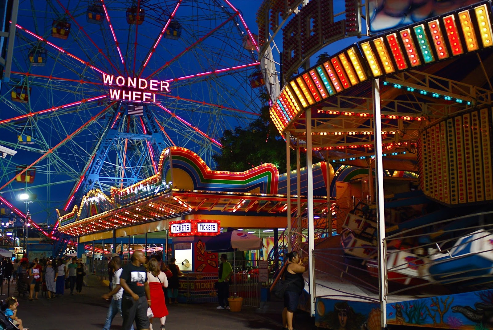
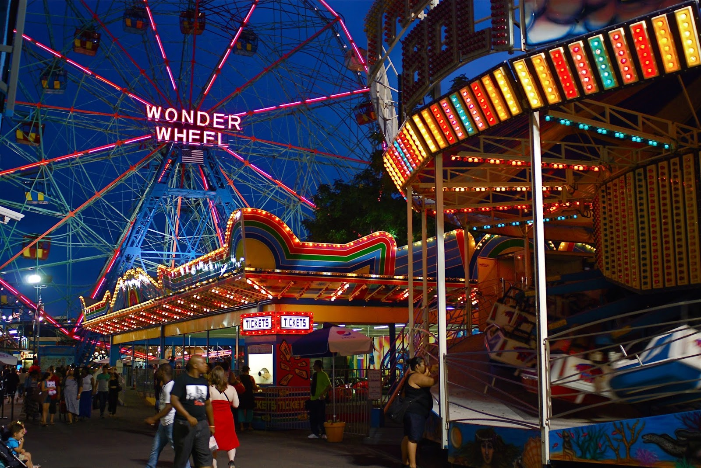
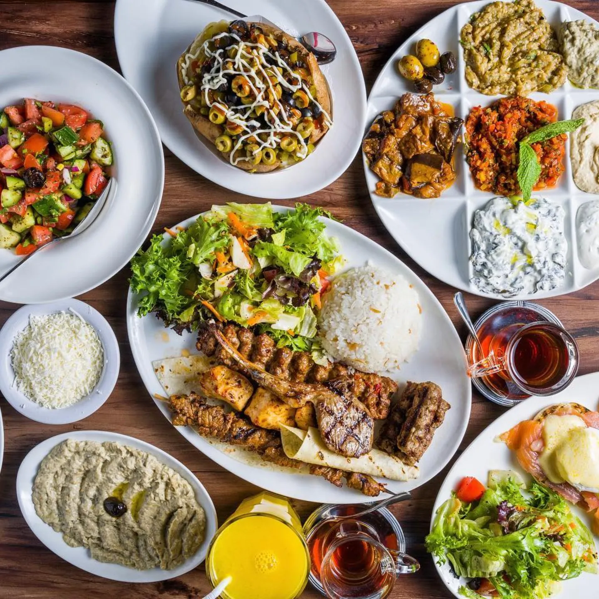
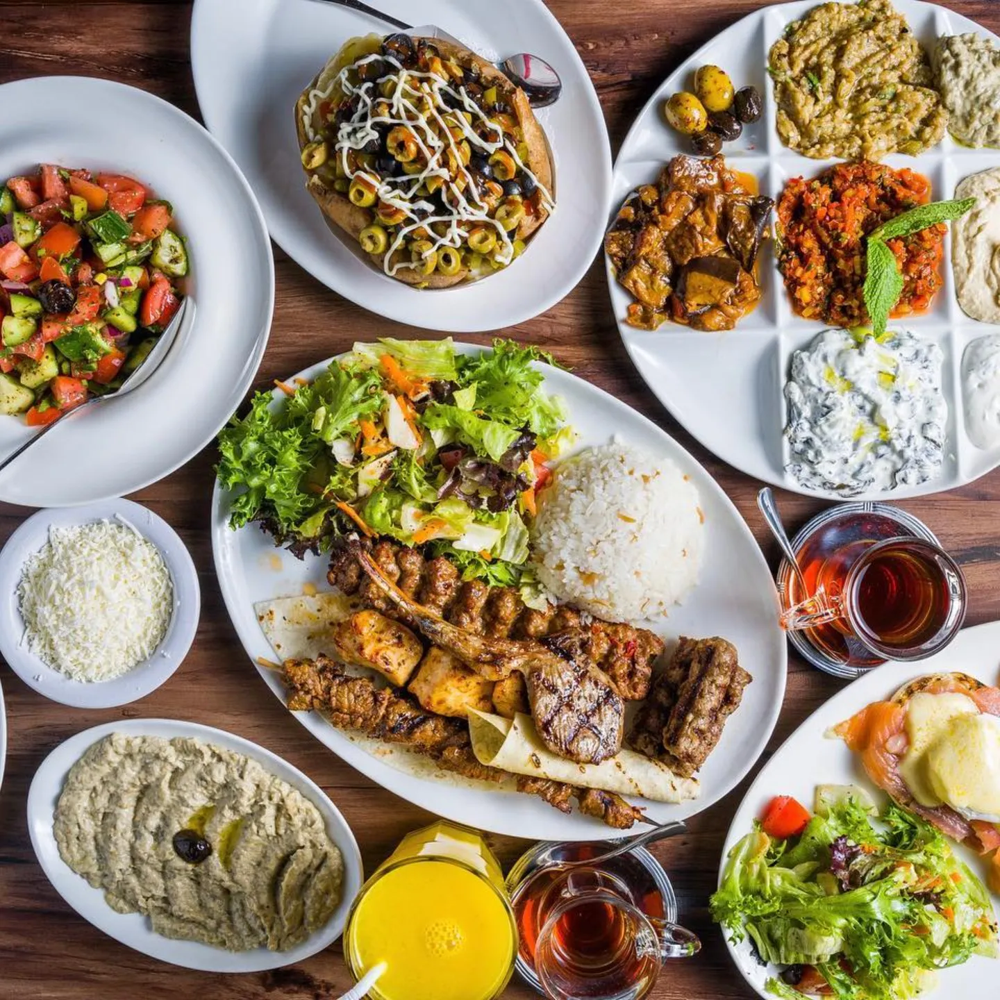

Prospect Park is one of Brooklyn’s favorite places to relax, explore, and enjoy the outdoors. Covering 585 acres, the park was designed by Frederick Law Olmsted and Calvert Vaux, the same team that created Central Park. It’s full of open meadows, shaded woodlands, and a large, peaceful lake that make it a perfect escape from busy city life. People come to Prospect Park to walk, jog, ride bikes, or simply sit and enjoy nature. There are plenty of spots for picnics, playgrounds for kids, and open fields for playing sports or flying kites. The park also has tennis courts, ball fields, and in the winter, an ice skating rink. Families love visiting the Prospect Park Zoo and seeing animals up close. Throughout the year, the park hosts concerts, farmers markets, and community events that bring people together. Whether you’re looking for a quiet walk, a fun day with family, or a place to enjoy the beauty of nature, Prospect Park has something for everyone.
Coney Island is one of New York City’s most famous seaside destinations, known for its fun boardwalk, sandy beach, and classic amusement rides. Located in southern Brooklyn, it’s a lively place where people come to enjoy the ocean, eat delicious food, and soak up the vibrant atmosphere. The area is home to the historic Luna Park, where you can ride the legendary Cyclone roller coaster and the Wonder Wheel, both icons of New York history. Along the boardwalk, visitors can grab a famous Nathan’s hot dog, play arcade games, or simply relax and watch the waves. In the summer, Coney Island hosts fireworks, concerts, and the annual Mermaid Parade, which celebrates creativity and local culture. Whether you’re looking for thrills, great food, or a day at the beach, Coney Island offers a one-of-a-kind mix of nostalgia, excitement, and seaside charm.
 

Opera Cafe Lounge, located along the picturesque Emmons Avenue in Brooklyn, is a vibrant spot that blends Mediterranean and Eastern European flavors in a cozy yet upscale setting. The menu features a variety of fresh seafood, succulent grilled meats, flavorful kebabs , and classic Mediterranean dishes, all made with high-quality ingredients. Whether you're in the mood for a hearty meal or lighter fare, there’s something for everyone, along with an impressive selection of signature cocktails and fine wines to complement your meal. What truly sets Opera Cafe Lounge apart is its lively atmosphere, with live music performances adding a touch of excitement and elegance. Guests can enjoy the music while dining in a chic, intimate space or relax on the outdoor patio, which offers stunning waterfront views. Perfect for a romantic dinner, a night out with friends, or even a special celebration, Opera Cafe Lounge is a must-visit for anyone looking for a memorable dining experience in Brooklyn.
 
